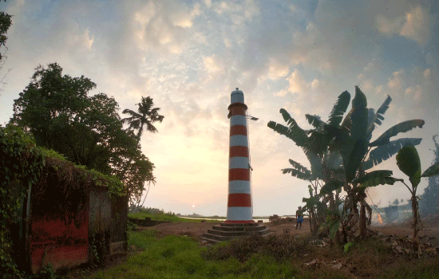
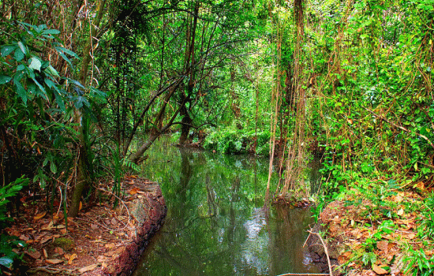

Kottayam
Kottayam district is famous for its rich heritage and literary tradition. It is renowned for its spice and rubber trade. Cradled by the backwaters and the Western Ghats, it is epitomised by its stretches of vast greenery, paddy fields and huge rubber plantations. Over five of the State’s leading newspaper publications originate from Kottayam. About four-fifth of books published in the State come from here as well. From trekking hotbeds like Nadukani and Kottathavalam to the rare avian life on display at the Kumarakom Bird Sanctuary, this district encompasses everything that God’s Own Country is famous for. Well connected to the entire State, it is full of interesting historical and cultural locations that tell the tale of how the district was forged into its current form.

Places to visit
Marmalade Waterfalls:
TThe Marmalade Waterfalls, which are only a few miles from Erattupetta and exactly 8 kilometres from Jeekoy, are the ideal destination for adventure. The mesmerizing beauty of the waterfalls gives the difficult and exhausting trek there rewarding. The view of the sparkling waters falling down clean and bright rocks at the Marmala Waterfalls is truly mesmerizing, best seasons to visit the waterfalls are spring and summer when the water is warm enough for a bath. Visitors should stay away during the rainy season since trekking and mountaineering may be difficult due to lightning and thunderstorms.
Kumarakom Bird Sanctuary

The Kumarakom bird sanctuary, gorgeously situated by the Vembanad Lake's shores, is home to a wide variety of rare, colourful, and beautiful bird species. Visitors may relax on the 14-acre area of lush, beautiful green meadows and enjoy the colourful birds in flight. This paradise for birdwatchers displays its various avifauna species and attracts wildlife enthusiasts from all over the world. Couples on their honeymoon, those who like picnics, and tourists and visitors looking for a quiet place to rest and relax may find joy at the sanctuary
Elaveezha Poonchira

Do you want to go on a hiking or trekking excursion where you may enjoy the attraction of the floral scent? Then you have to go to the ElaveezhaPoonchira. This valley, situated between three majestic hillocks, provides an incredible view of the city from its apex. Additionally, it provides a breathtakingly lovely and stunning view of the sunset. Picnic lovers would undoubtedly find a trip to this location worthwhile with the waterfalls. Melukavu village in Kottayam, Kerala, is the location. Visitors should stay away during the rainy season since trekking and mountaineering may be difficult due to lightning and thunderstorms.